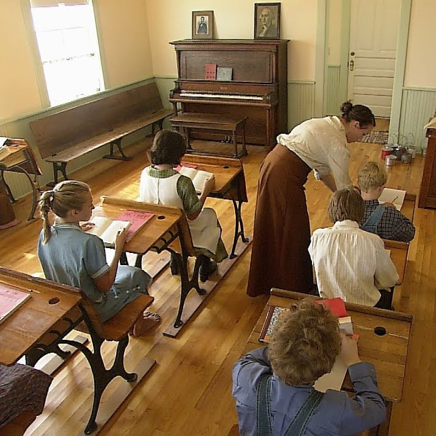
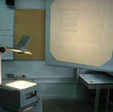
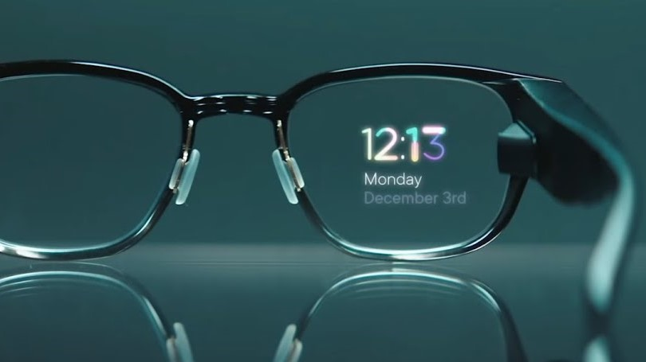
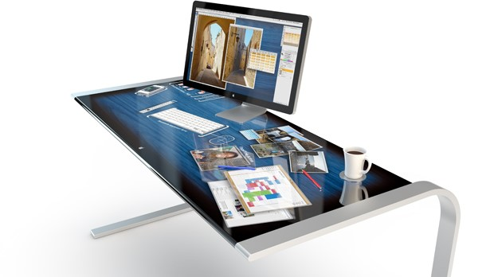
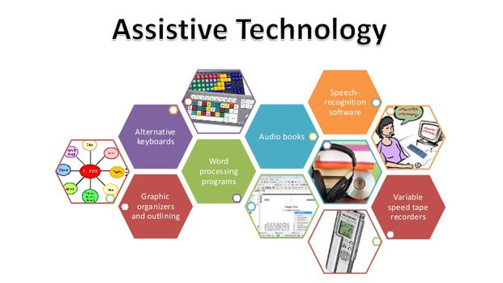

A Brief Summary
With a rise in technology, classrooms have changed from being a teacher lecturing at the front of the classroom to being more interactive with the help of technologies. The introduction of the radio sparked the technology movement, creating the overhead projector, films, calculators, scantrons, and introduced them into the common classroom.
These led to more advanced technologies, like the computer and the Internet, and led the classroom to be much more interactive. Today, we have technologies such as iPads, Microsoft Office, SMARTboards, variable speed tape recorders, and many others. In addition, we have opened up opportunities for those with disabilities to learn better in the classroom with assistive technologies, the most notable being phonetic spelling software, talking calculators, and even robots designed to help those with autism learn their social skills!
With the previously mentioned technologies currently being used, the possibilities for the future are endless! But, some new ideas that are currently being implemented are biometrics, augmented reality, touch screen technology, and even more ways to assist students with disabilities in the classroom.
Through the years
Brief history about how technology in the classroom has evolved through the years.
-

< 1923
Age of the One-Room Schoolhouse
Prior to the introduction of the radio in 1923, classrooms typically had students ranging from 1st through 8th grades being taught by one teacher. There were usually 6-40+ students, with the youngest sitting in the front and the oldest sitting in the back.
Examples of subjects taught are reading, writing, arithmetic, history, and geography. These lessons were memorized and recited by the students.
-

1923 - 1984
Pre-computer
After the introduction of the radio, (but before the introduction of the computer) many forms of technology were used such as:
Overhead projectors, films, television, headphones, photocopiers, calculators, and scantrons
-

1984 - 2019
Introduction of the Computer
After the computer was introduced in 1984, many new technologies were developed and implemented such as:
Macbook, laptops, CD-ROMs, HTML, SMARTBoards, Internet, and servers
-

> 2019
Present Day
Computers have built the stepping stones to other technologies in the classroom, such as:
Canvas, YouTube, Milo the Autism Robot, and the modern computer
-
There is
much more
to come!
Modern Technologies
These modern technologies are making a different in classrooms today.
Milo, the Autism Robot
A robot designed to help those with autism learn social queues
The Future Classroom
Biometrics
Biometrics are technologies that recognize people based on certain physical or behavioral traits. They can be used to recognize physical and emotional disposition of students in the classroom. Eventually, they can be used to analyze the students and alter the course material to tailor to each individual students' needs based on their own biometric signals.
Augmented Reality (AR) Glasses
Augmented reality glasses are already rumored to be on Google's release list, and they can be very useful not only in classrooms but in many aspects of everyday life. AR Glasses layer data on top of what we already naturally see, and will allow for a real-world learning experience.
Students wearing these glasses, or even contacts as technology advances, can potentially sit and have a conversation with historical figures about the subjects that they are learning. For example, it may even be possible to learn about electricity from Thomas Edison himself!
Advancement in Multi-Touch Systems
Multi-touch systems, more commonly known as devices with touch screens, are already a large part of our society today. But, there is a lot of room to grow from simply iPads, Smartphones, and touch-screen laptops.
If we keep expanding, we can use these multi-touch systems on a larger scale: touch screen desks, more advanced SmartBoards, or possibilities we haven't yet thought of. These large-scale workstations could allow students to collaborate, whether in the same classroom or in other parts of the world. These large workstations could even stream videos directly to the surface and enhance the classroom even further.
Assistive Technology
While we already have phonetic spelling software, talking calculators, and even a robot to help autistic children learn their social skills, there is still an endless amount of possibilities to help these children even further.
Milo, the Austism Robot, is definitely a step in the right direction, but it is very likely that he will become more advanced and be able to be of even more help. Whether it be him becoming more realistic-looking, having more features and interactions, or even helping those with other disabilities, the future is bright for assistive technologies.
